Início — primeira dobra
01-inicio-412.png — 412 × 915. Seed original, quatro concluídas e uma atrasada.
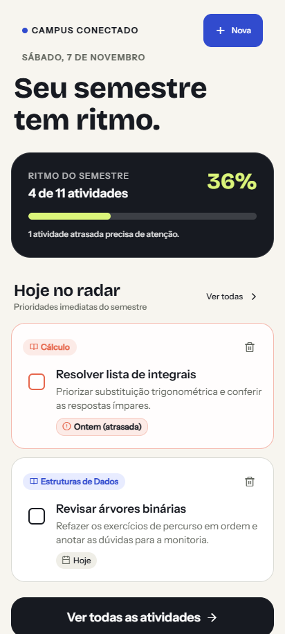
Capturas web do código atual, em tamanhos de celular. Não são prints do APK Android. Nenhuma alteração visual foi aplicada. Abra uma imagem para vê-la no tamanho original e use seu número ao enviar diretrizes.
Revisão e prioridades · Origem e limitações
01-inicio-412.png — 412 × 915. Seed original, quatro concluídas e uma atrasada.

02-inicio-rodape-412.png — O botão Restaurar dados da demo é exclusivo do desenvolvimento e não aparece no APK release.
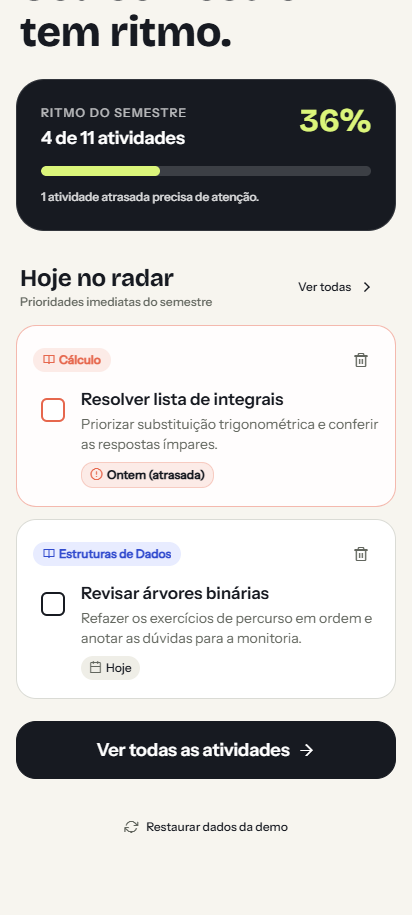
03-atividades-todas-412.png — Onze atividades; filtros por status e disciplinas.
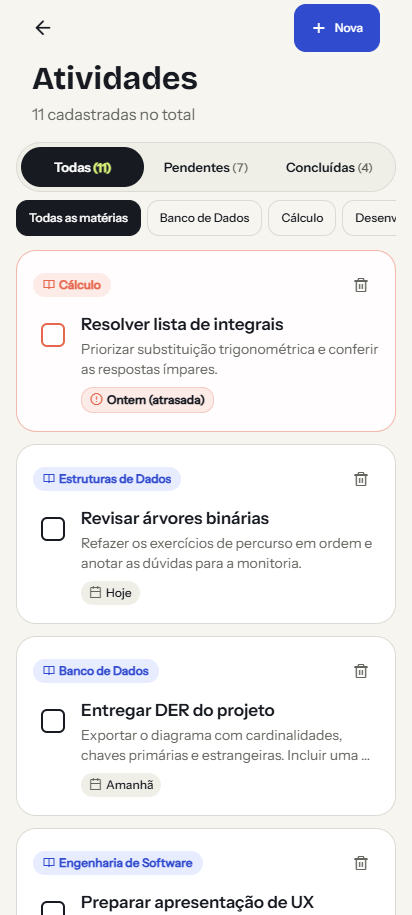
04-atividades-pendentes-412.png — Sete pendentes, incluindo atividade atrasada.
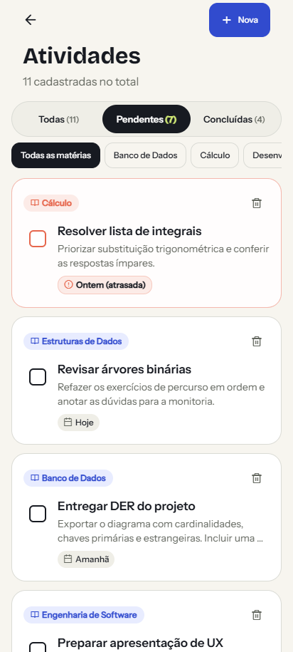
05-atividades-concluidas-412.png — Quatro concluídas; verificar legibilidade dos cartões atenuados.
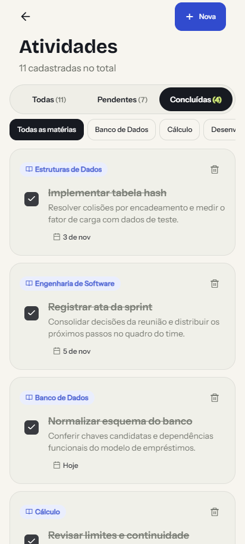
06-criar-topo-412.png — Na web há campo ISO para data; o APK usa seletor Android e botão Outra data.
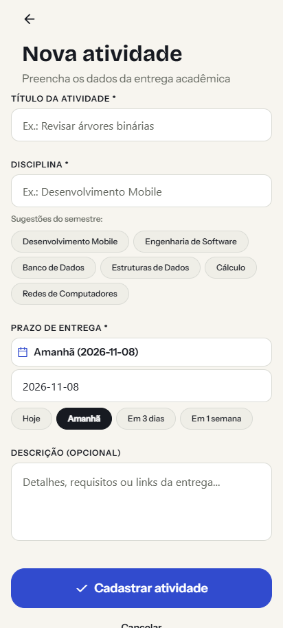
07-criar-rodape-412.png — Ação principal no fluxo de rolagem. Teclado Android não representado.
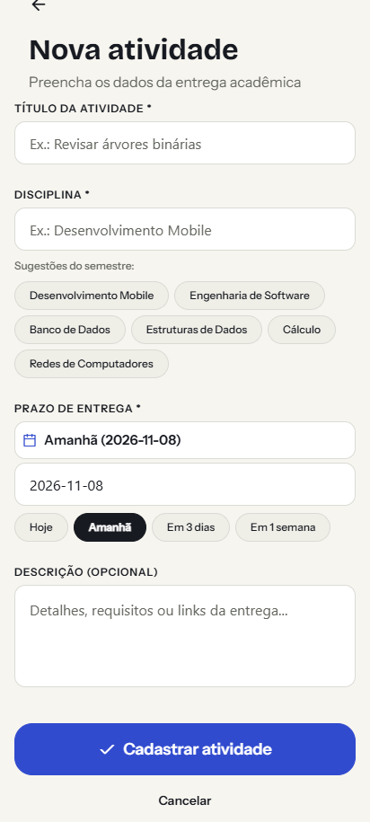
08-criar-validacao-412.png — Campos obrigatórios vazios; sem criação de atividade.
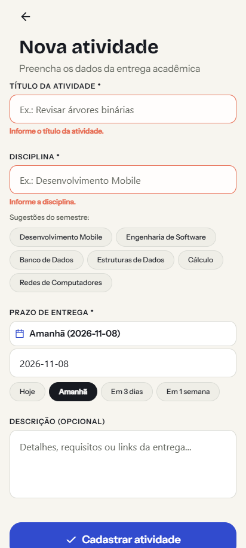
09-editar-412.png — Mesma experiência de formulário, com conteúdo real da seed e ação de excluir.
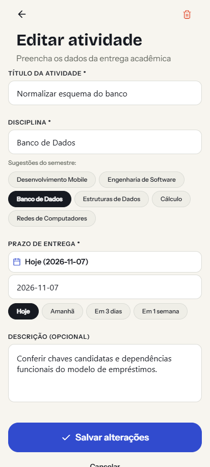
10-lista-vazia-412.png — Dados vazios apenas no perfil isolado desta captura.
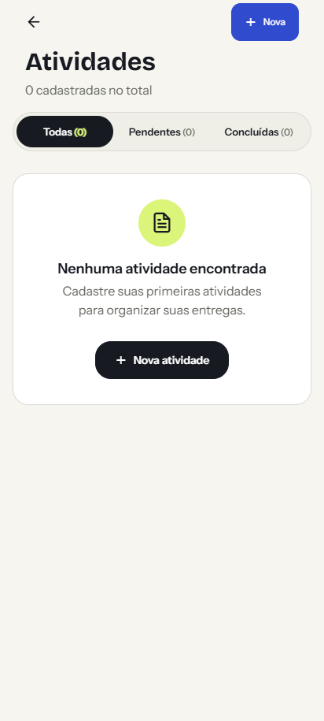
11-tudo-concluido-412.png — O radar continua exibindo duas atividades concluídas; estado importante para revisão de copy.
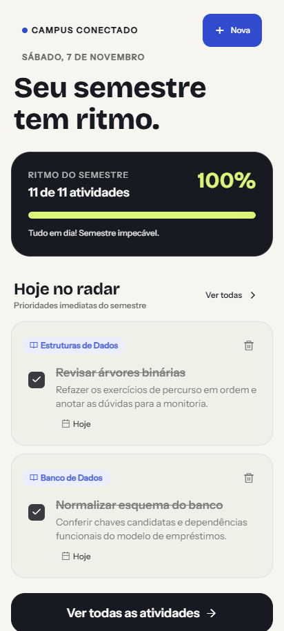
12-erro-armazenamento-412.png — Mensagem preserva dados e oferece tentar novamente.
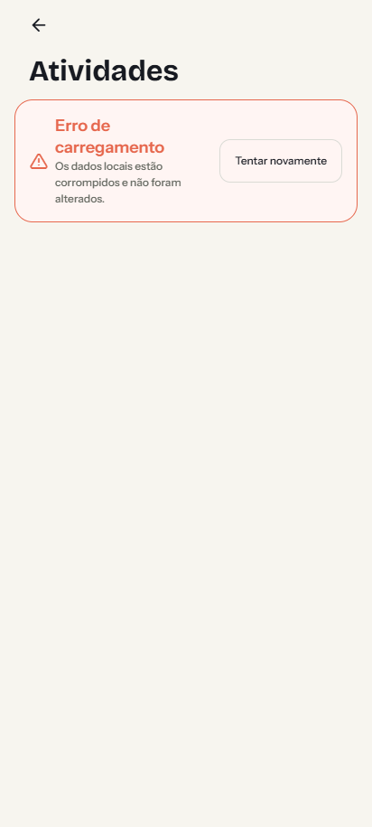
13-inicio-360.png — 360 × 800 para avaliar espaço ocupado antes das tarefas.
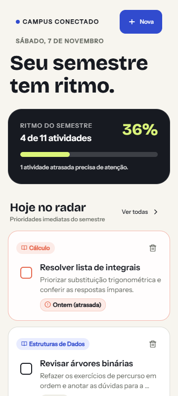
14-criar-360.png — Quantidade de sugestões antes do prazo e da ação principal.
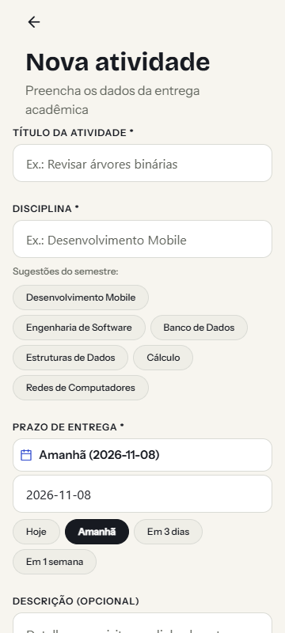